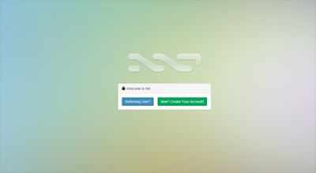
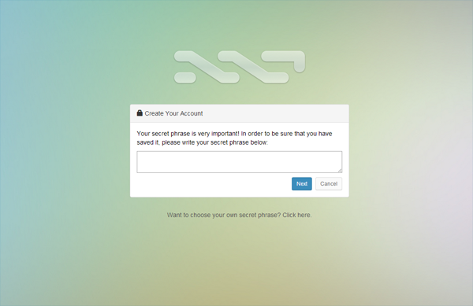
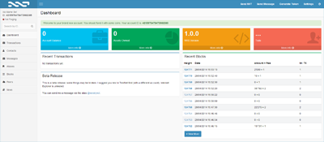
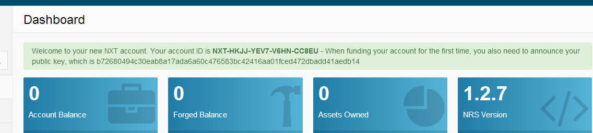

How-To: Создание аккаунта
Создание адреса Nxt аккаунта
Для начала работы с Nxt, вы должны создать Nxt аккаунт. Это будет Вашим адресом, для того чтобы получать и отправлять NXT.
Чтобы создать Вашу учетную запись, вам необходимо установить клиентское программное обеспечение Nxt на Вашей машине, если вы еще этого не сделали, после чего необходимо запустить программное обеспечение Nxt. Как только вы это сделали, и Nxt работает на Вашем компьютере:
- В Nxt клиенте, на стартовой странице, нажать на кнопку зеленого цвета New? Create Your Account!.

- Клиент Nxt должен будет автоматически сгенерировать надежную секретную фразу для вас, созданную из 12 случайных слов. Вы увидите её внутри текстового блока.

- Если вы хотите использовать секретную фразу сгенерированную системой, запишите её, скопировав её в защищенном месте или запомните (это ОЧЕНЬ ВАЖНО, так как только с этой секретной фразой вы получите доступ к своему, только что созданному аккаунту!). Как только вы сохранили свою секретную фразу, нажмите Next. Если вы хотите использовать свою собственную секретную фразу, перейдите к шагу 4. Иначе, пропустите шаг 5.
- Если вы хотите использовать свою собственную секретную фразу, будте очень внимательны и убедитесь что вы создали действительно сложную секретную фразу. Не создавайте секретную фразу, пока вы точно не поймете какой должна быть действительно безопасная секретная фраза. Если Вы не отнесетесь к этому серьезно, и сделаете ошибку на этом шаге, то рано или поздноВы будете ограблены.
- НЕ ИСПОЛЬЗУЙТЕ ПАРОЛЬ ДЛИННОЙ МЕНЕЕ ЧЕМ ИЗ 35 СЛУЧАЙНЫХ СИМВОЛОВ, или состоящий из менее чем 12 случайных слов
- Простой пароль будет взломан и ваши монеты будут украдены.
- Для создания криптографический сильной секретной фразы используйте соответствующие инструменты, как например https://defuse.ca/passgen.htm
- Обязательно прочтите раздел безопасность аккаунта.
- ОЧЕНЬ ВАЖНО:
- Запишите вашу секретную фразу, и сохраните её в защищенном месте. Она будет использоваться для генерации номера вашего аккаунта
- Как только вы создадите и введете этот пароль, он больше никогда не может быть изменен
- Если вы потеряете вашу секретную фразу, вы потеряете доступ к вашему аккаунту
- Не передавайте вашу секретную фразу кому либо.
- Как только Вы генерировали безопасный пароль, вставьте его в текстовое поле на странице Create your account, заменив секретную фразу сгенерированную клиентским приложением, и нажмите Next.
- НЕ ИСПОЛЬЗУЙТЕ ПАРОЛЬ ДЛИННОЙ МЕНЕЕ ЧЕМ ИЗ 35 СЛУЧАЙНЫХ СИМВОЛОВ, или состоящий из менее чем 12 случайных слов
- На следующей странице Вы должны будете ввести снова свою секретную фразу, чтобы удостовериться, что Вы ввели её правильно. Как только вы введете её, нажмите Next.


{kind=link}
{kind=link}
Поздравляем! Ваш аккаунт создан и вы приступаете к работе с интерфейсом клиента Nxt. Ваш новый аккаунт(строка начинающаяся с NXT- ) отображается в верхнем левом углу окна клиента Nxt. Запишите ваш номер аккаунта!

Напоминание: До тех пор пока вы не отправите хотя бы 1 Nxt с вашего аккаунта, вы будете защищены только 64-bit открытым ключом. Но как только вы сделаете исходящую транзакцию, ваш аккаунта получит публичный ключ (public key) и будет защищен уже 256-bit ключом, что значительно безопаснее. В связи с этим, мы рекомендуем создать минимальную транзакцию, как например отослать Nxt, зарегистрировать альяс, или отослать произвольное сообщение как можно скорее после того, как в вашей учетной записи появятся первые Nxt.
Чтобы получить Вашу первую транзакцию, отправитель должен будет знать Ваш открытый ключ. Вы можете найти его в Инструментальной панели Вашего клиента:

{kind=link}
{kind=link}